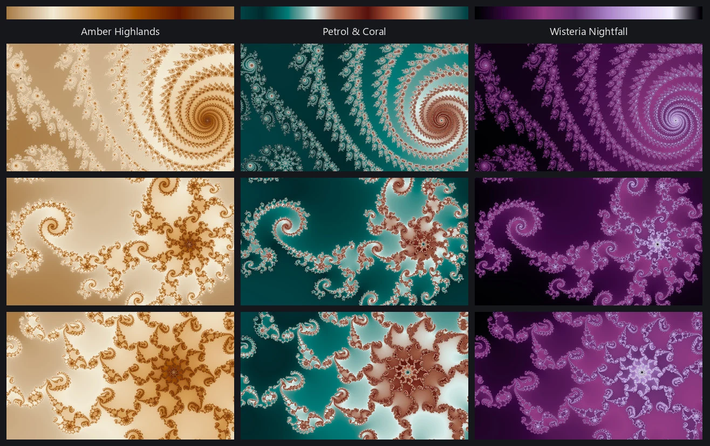
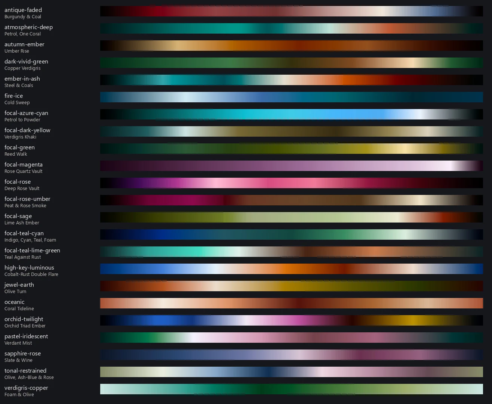
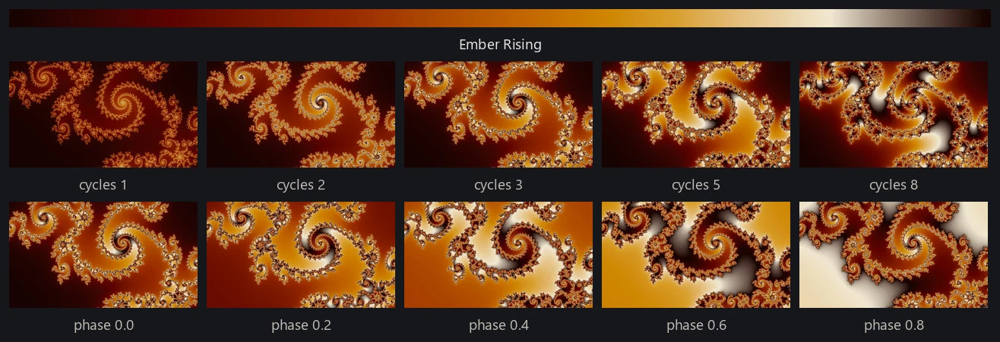
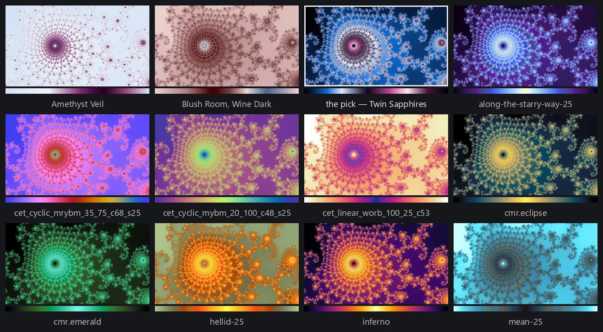
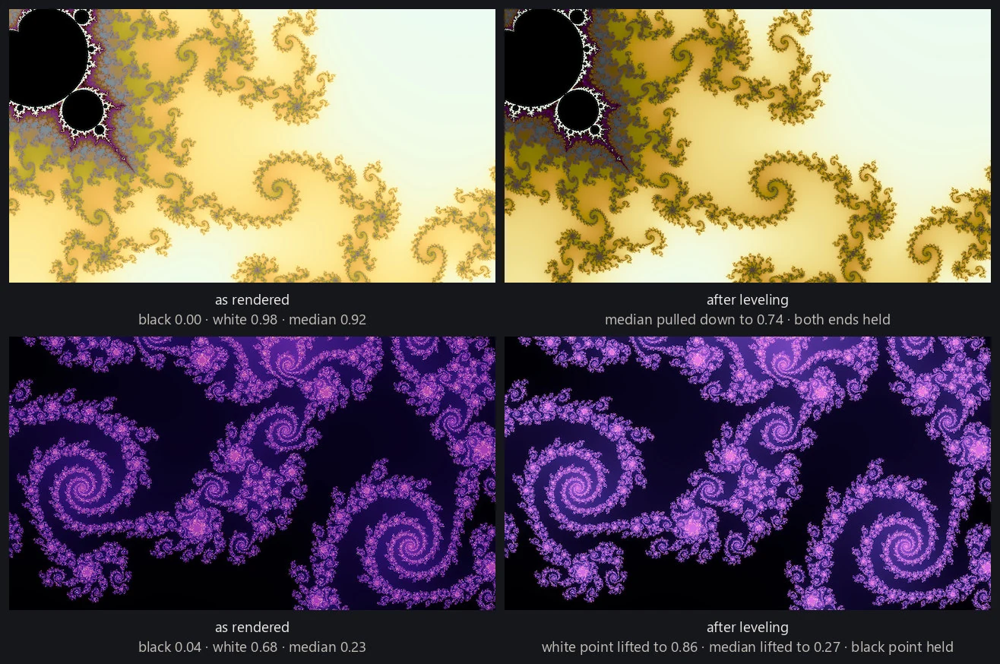

Finding a good location is slow; coloring it is fast, at least for the modes that read one scalar field. For each pixel the renderer computes a field: the smooth escape value from rendering fundamentals, or whatever the rendering mode measures. That is where nearly all the work goes. Where a mode reads one field the field can be kept, and every palette tried on it is a lookup over the same array; a composite or a direct trap has no single field to keep and pays for a whole render each time. The pipeline chooses each location's palettes with a trained palette judge, and it asks the question on the cheap half deliberately: the 32 candidates it ranks are always recolorings of that location's smooth field, whatever mode the wallpaper is eventually drawn in. One iteration pass per location instead of thirty-two, and the judge is shown the kind of picture it was trained on; the palette it picks then colors whatever mode the attempt actually draws.

A palette is a short list of stops: positions from 0 to 1, each with a color. The engine fills in between the stops by linear interpolation in OKLab and bakes the result into a table of 4,096 colors, which a render reads through the recipe below. OKLab is a color space arranged so that distance in its coordinates roughly tracks how different two colors look, which is what makes a blend through it cleaner than the same blend in RGB: blue to yellow in ordinary RGB passes through a dull gray-brown, because the midpoint of the coordinates is not the midpoint of what you see. A cyclic palette ends with the color it began with, so when a render sweeps the table more than once there is no seam where it starts again. A sequential palette has two different ends, and repeating one slams the last color against the first. Folding is the fix: the palette is baked as an out-and-back, forward and then backward, so it meets itself. Folding bakes a different table rather than reading the same one differently, and it is not a choice a render makes: the library records each palette as cyclic or sequential and the fold follows.
Where the palettes came from
The library holds a bit over a thousand palettes (data/palettes/). About two hundred are ramps converted from scientific plotting libraries: matplotlib, colorcet, cmasher. They are built for reading a chart, and I found the plainer ones dull on a fractal: one hue, one sweep from dark to light, no event anywhere along the ramp. About a third of the library was distilled from fractal pictures in my own wallpaper collection, and those set the standard I wanted the rest built to: a wide range of lightness; darks and lights that still carry a hue; a bright band that reads as light; and at least one of pure-hue contrast, a big warm-to-cool swing, or several hues held in balance. The rest were written by Claude, in tracked batches, from a prompt I wrote. The palette prompt states those properties as rules, names a mood family (fire-ice, jewel-earth, oceanic, and so on), gives each batch a handful of structural templates to spread across, and ends with a schema. A request looks like: twenty palettes, fire-ice, moderate complexity, bright on dark. A small script checks the mechanical rules before anything is rendered. The prompt, the script, and each authored palette's own record ship with the repository. The prompt runs as-is in Claude; see make your own palettes.
Two hundred of the authored palettes were written to a second aim. Sorting a finished wallpaper into fifty-two named colors (twelve hues at two lightnesses and two chromas, plus four neutrals) says which colors the collection reaches, and the answer was: very few. Most pictures concentrate their area on a small handful of the fifty-two, and a whole band of them (greens, limes, teals, cyans, and the dark yellows) went almost unrepresented, so I aimed a batch there. Every one of the forty-eight colored cells now has at least one palette that can make it the dominant color of a picture on at least one reference field. The figure below shows one palette from each family the palette prompt names.

The whole library, one strip per palette, grouped by the color each palette is dominant in, is on its own page.
Applying a palette
A palette is not applied bare. The field value is normalized and then placed on the ramp by a small recipe the render records under the engine's own names: gamma, a power applied to the value first; cycles, how many times the ramp is traversed across the range of field values; and phase, where along the ramp the traversal starts. The same palette at one cycle reads as a slow wash across the picture; at eight it reads as fine banding that follows the geometry. The figure below shows one location and one palette under several of those settings.

Not every palette sits well on every location. The field decides how much of the ramp a picture uses and where its mass falls, so a palette that is luminous on one location is a dark smear on the next. The figure below holds the location fixed and changes only the palette; I like a couple of them and not the rest.

To make that call automatically, the pipeline trains a palette judge for exactly this question. It has the smallest job of the four judges: given one location and 32 recolorings of its smooth field, pick one. The candidates vary by palette and by nothing else: the same field at gamma 1, one cycle, phase 0. The judge sees the rendered frame only, never a description of the palette, and it is trained only on the differences inside one set, so its scores mean nothing across locations (models/palette/).
Why diversity has to be built in
A pipeline that selects for quality converges on a theme. The palettes that score best on the most locations resemble one another, and without a counterweight the best wallpapers become variations on one color idea that happens to transfer well. I find fire- and ice-themed palettes are close to universal across locations and families, and left alone the pipeline would find that too.
The counterweight is in how a candidate set is built. Each palette gets a descriptor: the ramp as a render spends it, folded if sequential, sampled at 32 evenly spaced colors, and written in OKLab, which is 96 numbers per palette. The set for a location is a neighborhood in that space: one anchor palette and its 31 nearest neighbors, so the judge always chooses among palettes that belong together rather than among 32 unrelated ones. Palettes near enough to be the same choice are grouped, and a run stands one member of each; that grouping is cut on a second and more careful distance than the 96 numbers, against my own same-or-different calls on a few dozen pairs, and it means treat these as one choice rather than no wallpaper could tell them apart. Anchors are drawn without replacement, so none anchors twice until every one has anchored once, and two locations in one release are asked about different regions of palette space. Gallery curation later caps how many seats one of those groups can take, though at the sizes tried so far it has had almost nothing to refuse.
Autolevel
A palette that sits well on one location can land too dark, too light, or too flat on another. Autolevel corrects for that after the pick. It measures three things about the finished picture, all of them robust percentiles rather than extremes: a black point read over its near-neutral pixels, a white point, and the median lightness of everything that is not black. Those go against a band derived from 48 finished wallpapers I had already accepted (data/coloring/levels_band.json). Inside the band it does nothing at all. Outside it, it bends the palette's own stops along a lightness curve that does not reorder them, and draws the picture again through the bent palette: the three statistics move toward their bands, while pure black and pure white stay where they are. Across the tracked releases it has acted on about four in ten of the renders it applies to. It applies where the palette's tone is the picture's tone, which is the plain field colorings and the composites: not the direct traps, whose tone belongs to their flat ground, and not itinerary, which reads a different place in the ramp at every sample, so bending the palette would move each sample by an amount that depends on where its texture had sent it. Where the mode keeps a field the second draw is only another recoloring of it; a composite pays for the whole render twice.
